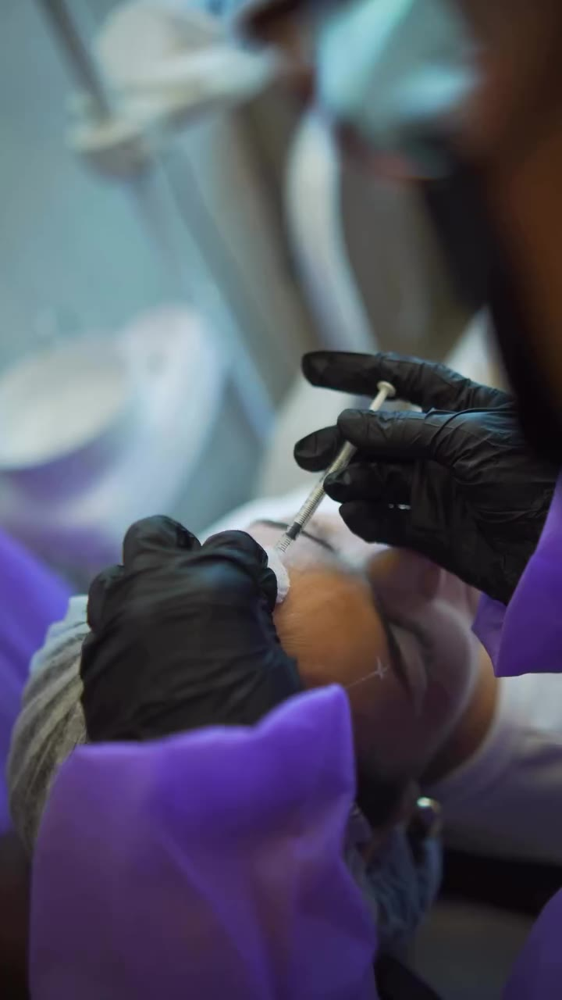

Turma 24 com inscrições abertas
Imersão Expert em Toxina Botulínica
O curso que deu origem à escola. Da reconstituição do produto à aplicação em paciente, cada etapa feita por você.
- Anatomia muscular aplicada
- Reconstituição e diluição
- Marcação e aplicação em pacientes
- Intercorrências e pós-procedimento